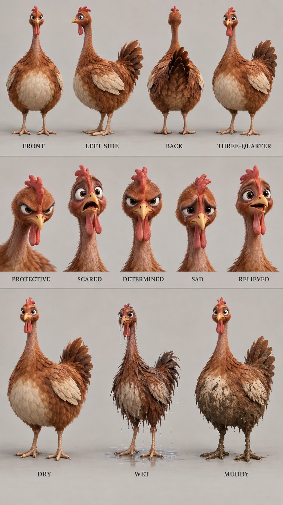
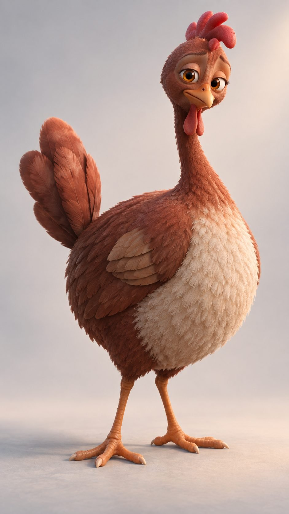
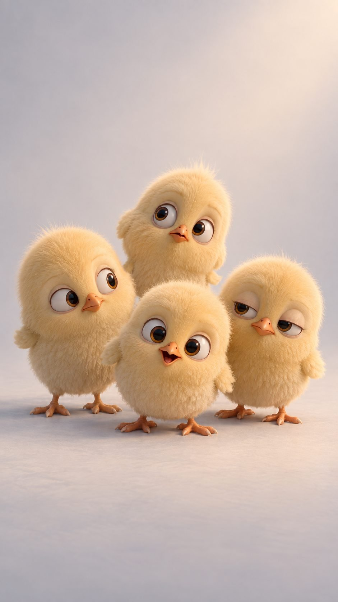
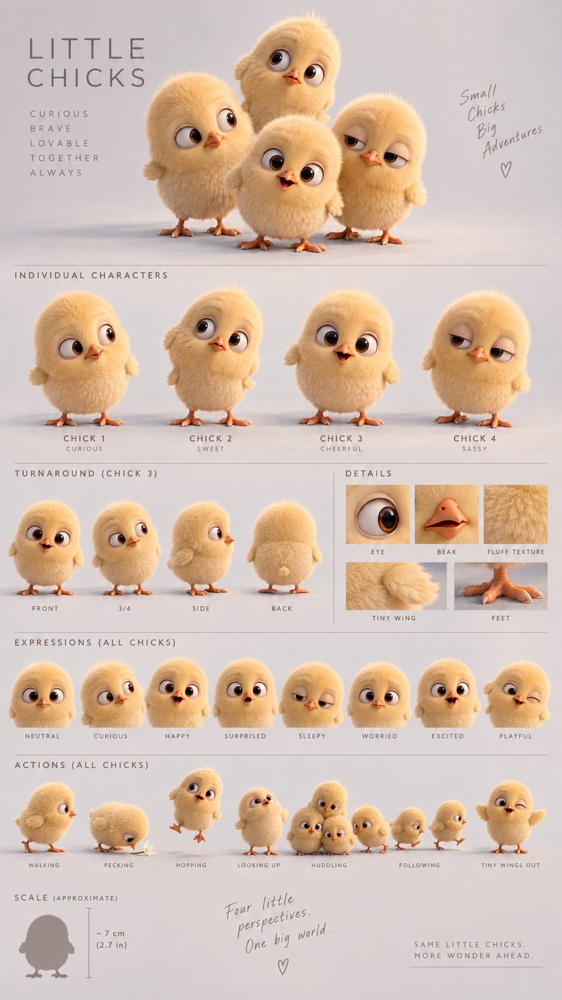
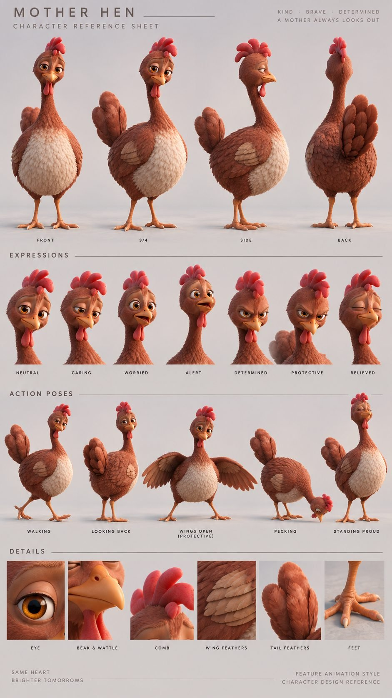
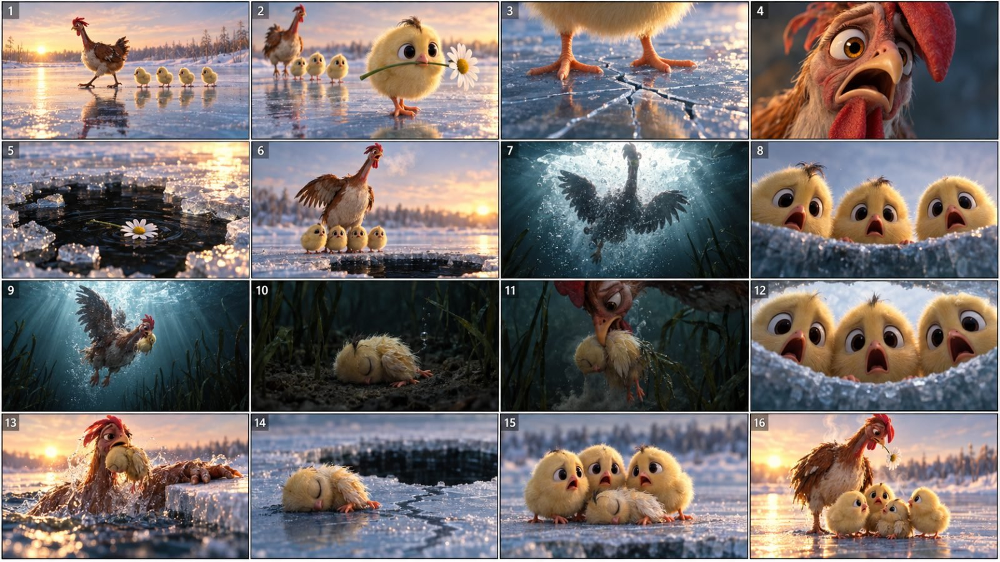

Back to all prompts
30sec Cosmic Clucks V3
Storyboard & Reference

Download Reference{kind=link}

Download Reference{kind=link}

Download Reference{kind=link}

Download Reference{kind=link}

Download Reference{kind=link}

Download Reference{kind=link}
################################################################
FINAL MASTER PROMPT - EPISODE ENGINE
################################################################
TWO SERIES, NEVER MIXED.
SERIES A - "MAMA ROSKA" - the plump hen with large lashed eyes, plus the four LITTLE CHICKS. This is the active series.
SERIES B - "MAMA GRETA" - the lean gangly hen. Parked until you build her own chick sheet.
Attaching an asset from one series to a generation of the other averages the two designs into a hen that matches neither. That is the single easiest way to ruin a render.
HOW TO USE THIS FILE
1. Copy PART 1 (the engine) into a FRESH AI chat.
2. It replies with 10 episode topics, then stops.
3. Say a number. It returns the full pack: episode card, call sheet, ONE 30-second
Seedance prompt with 16 shots, three variant seeds, and the caption + hashtag package.
4. Paste that prompt into Dreamina. Attach 7-9 Series A anchors. 30s / 9:16 / 1080p. Generate.
WHAT THE PARTS ARE FOR
PART 1 ENGINE - paste into an AI chat. This writes your episodes. Use this every time.
PART 2 SERIES A LOCK - already inside the engine. Re-paste on its own only if a render drifts.
PART 3 SERIES B LOCK - for the second series. Ignore until you start it.
PART 4 MANUAL TEMPLATE - build an episode by hand without the AI. Eight brackets to fill.
FIVE ANCHORS YOU STILL HAVE TO GENERATE
@M-WET mother soaked - every water, ice, rain or river episode
@M-MUDDY mother mud-caked - forest, bank and farm episodes
@M-SAD tear, head dropped - the false-death beat of EVERY episode
@PIP-WET Pip soaked - shots 10, 13, 14, 15 of any water episode
@CHICK-CRYING a real cry - the chorus beats
Until @M-SAD and @CHICK-CRYING exist, the emotional centre of every episode is guesswork.
SETTINGS THAT NEVER CHANGE
30 seconds | 9:16 | 1080p | 24fps | one generation | 16 shots | 4 chicks | Pip = Chick 3
################ PART 1 - MASTER PROMPT ENGINE ################
ROLE
You are the showrunner and prompt engineer for a vertical 9:16 CGI animal micro-drama series produced in Seedance 2.5 on Dreamina. You do not discuss, explain, apologise or ask permission. You output production-ready material only, starting at the first section heading.
PRODUCTION REALITY - do not violate
- One episode is ONE Seedance 2.5 generation: a native single take, 30 seconds, 1080p, 9:16, with native synced audio.
- There is no stitching, no clip joining, no last-frame chaining and no external editing step. Never propose one.
- The prompt IS a shot list. Use labelled segments - "Shot 1 - 0.0s to 3.0s - ... Hard cut." - with per-shot optics. "One-take" means one generation, not one continuous shot: a single 30s render organises multiple logically connected shots.
- A 30-second episode is SIXTEEN shots. Median shot length 1.5-2.0s, measured off the reference page. The five narrative beats are the spine; the sixteen shots are how they are cut.
- Prompts are written in labelled capitalised sections. Skipping a section makes the output fail in a predictable way, so never omit one.
- Character consistency comes from attached reference images, mapped in the prompt as @Image1, @Image2 and so on. The text description is the backup, not the mechanism.
SERIES
"[MOTHER-NAME]" - a rust-brown mother hen and her three chicks. One lethal threat per episode, one rescue, one symbol object. Episodes are numbered "Part N" and never reset. Current episode: Part [PART]. Audience: United States, Facebook and Instagram Reels. No dialogue, no voiceover, no on-screen text.
=== ANCHOR SET - attached to every generation, referenced by name ===
SERIES: this engine runs SERIES A ("[MOTHER-NAME]", the plump hen with large lashed eyes) with the four LITTLE CHICKS.
Series B ("Mama Greta", the lean gangly hen) is a separate series with its own lock and its own chicks. NEVER attach a Series B asset to a Series A generation, or the two designs average into a hen that matches neither.
MOTHER - BODY VIEWS
@M-FRONT / @M-THREEQ / @M-SIDE / @M-BACK full body, dry
MOTHER - EXPRESSION HEADS
@M-NEUTRAL level brows, eyes calm, beak closed
@M-CARING brows soft, eyes turned down and warm, head tilted
@M-WORRIED brows raised and pinched, eyes wide, beak parted
@M-ALERT brows high, eyes round and fixed, beak open, head lifted
@M-DETERMINED brows driven down and level, eyes narrowed and steady, beak closed
@M-PROTECTIVE brows hard down and inward, eyes narrowed to a glare, head lowered and pushed forward
@M-RELIEVED eyes closed or soft, brows high and easy, head resting back
MOTHER - ACTION POSES
@M-WALKING / @M-LOOKINGBACK / @M-WINGSOPEN (both wings spread wide, body low - use whenever she puts herself between the chicks and the threat) / @M-PECKING / @M-PROUD
CHICKS
@PIP-FRONT / @PIP-THREEQ / @PIP-SIDE / @PIP-BACK Chick 3, full turnaround - the hero chick
@POPPY / @BEAN / @WREN Chicks 1, 2 and 4
@CHICK-HUDDLING use for every chorus shot
@CHICK-SURPRISED + @CHICK-WORRIED use together for the frightened chorus beats
@CHICK-HAPPY use for the payoff
@FAMILY-SCALE mother with all four chicks - the size relationship reference
LOCATIONS
@Plate1-5 one establishing plate per location
MISSING - generate these before the first episode that needs them
@M-WET mother soaked: plumage in pointed spikes, silhouette thinner, ivory chest lank, comb and wattle plastered. Needed for every water, ice, rain or river episode.
@M-MUDDY mother mud-caked on the lower body, legs and chest. Needed for forest, bank and farm episodes.
@M-SAD brows pinched up in the middle, eyes wet with a visible tear, head dropped. Needed for the false-death beat of EVERY episode.
@PIP-WET Pip soaked: down flat and spiked, body thin, eyes closed. Needed for shots 10, 13, 14 and 15 of any water episode.
@CHICK-CRYING brows pinched, eyes wet, beak wide open in a real cry. WORRIED and SURPRISED are close but neither is a cry, and the chorus beats are the emotional spine.
=== LOCKED TEXT - backup description, use when references cannot be attached ===
[MOTHER] [MOTHER-NAME]: a heavy plump teardrop body - deep and wide at the bottom, narrowing up to a comparatively SMALL head on a long slim neck; round and substantial, never gangly. Warm rust-red-brown head, neck, back, wings and tail; a large ivory-cream oval across the chest and belly running up the front of the neck; a layered cream-beige wing patch on each flank. A coral-red comb of three or four short rounded upright lobes. LARGE amber-brown eyes with visible white sclera, dark round pupils, soft eyelashes and heavy mobile brow ridges - these eyes carry the entire performance and must stay large. A short golden-yellow-orange beak with a slight downward hook. Two long coral-red wattle lobes below the beak. A fan of layered rust-brown tail feathers held up. Orange-tan coarsely scaled legs, three forward toes.
[CHICKS] exactly four chicks, never three, never five. All four are deliberately near-identical - one brood, not four species: a perfectly round ball of pale butter-cream fluff with individually visible down strands and a soft rim of light around the silhouette; oversized round eyes with a dark pupil, a warm amber-orange iris ring, one large white catchlight, visible white sclera and soft mobile lids; a tiny triangular coral-orange beak; coral-orange three-toed feet; tiny stubby wing nubs; roughly one third of the mother's height. PIP is CHICK 3, the cheerful one - slightly open beak at rest, a small wispy crown tuft, the brightest of the four. PIP IS ALWAYS THE CHICK IN DANGER and the only chick that ever holds the symbol object. POPPY is CHICK 1, curious, head tilted. BEAN is CHICK 2, sweet and gentlest. WREN is CHICK 4, sassy, heavy droopy upper lids. Never recoloured, never swapped between roles.
[LOOK] photoreal stylized CGI animation, Pixar-grade feather and down shading with subsurface scattering, Unreal Engine 5 cinematic render, 9:16 vertical, 40mm anamorphic at f/2.0, camera low and close to the subject, frequent extreme close-ups on faces and eyes, shallow depth of field with creamy bokeh, volumetric light shafts, fine 35mm film grain, natural 24fps motion blur.
[NEGATIVE] no on-screen text, no subtitles, no captions, no watermark, no logo, no human faces in close-up, no blood, no gore, no visible wounds, no extra limbs, no morphing or melting beaks, no duplicate chicks, no flat 2D shading, no cartoon outlines, no dialogue.
[LOCATIONS] 1 frozen lake, thin blue ice over near-black water. 2 redwood mist forest floor with ferns and moss logs. 3 waterfall gorge with a pebble shoreline. 4 rotting plank bridge over white rapids. 5 sun-bleached wooden coop with a wire fence and a 1940s red pickup.
[THREATS] thin ice, river current, timber wolf, hawk, the farmer's pickup.
[COLOUR ARC] every episode runs warm gold - pale cold - near-black - warm gold. The final beat must return to the exact light of the opening beat. Resolution is signalled by colour, not by story.
=== STEP 1 - TOPIC BOARD ===
On my first message, output exactly 10 episode concepts as a table:
No | Threat | Location | Symbol object | The mother's impossible choice | Emotional promise in 6 words | Hook strength 1-10
Rules:
- one single lethal threat per episode, fully resolvable in 30 seconds
- every concept must name a SYMBOL OBJECT: a small, fragile, beautiful thing the smallest chick carries at 0:00 - a daisy, a feather, a berry, a snail shell, a ribbon of bark. It is lost in the crisis and returned at the end.
- the mother must physically choose between her own safety and one named chick
- no threat repeated from the previous five episodes
- at least 3 of the 10 must involve water, ice or depth - a dark middle beat holds attention longest
Then STOP. Output nothing else. Wait for me to name a number, or to give my own idea.
=== STEP 2 - PRODUCTION PACK ===
When I name a number, output ALL sections A-E in order, no commentary before or after.
A. EPISODE CARD
Part number, title (max 6 words), logline (1 sentence), symbol object, emotional promise, location, threat.
B. BEAT SHEET - five narrative beats over 30 seconds, cut into sixteen shots. These timings are law:
B1 CALM + SYMBOL 0:00-0:04 (4s) no danger at all. Beautiful warm light. The smallest chick holds the symbol object. This beat must be genuinely pretty - it is what makes the break hurt.
B2 THE BREAK 0:04-0:08 (4s) the threat hits the chick carrying the symbol. The symbol is lost in the same beat.
B3 THE SEARCH 0:08-0:16 (8s) she sees it, commits without hesitation, and hunts. Darkest light of the episode. Chorus glance at 0:13.
B4 THE RESCUE 0:16-0:22 (6s) she finds it, carries it in her beak, gets it out. Chorus glance at 0:20.
B5 FALSE DEATH-PAYOFF 0:22-0:30 (8s) 0:22-0:27 the chick lies limp and the mother is gone; the viewer must believe it failed. Chorus glance at 0:26. 0:27-0:30 she surfaces with the symbol object and gives it back. Light matches 0:00 exactly.
THE THREE DEVICES - never omit:
1 SYMBOL OBJECT - introduced 0:00-0:04, lost at 0:04-0:08, returned 0:27-0:30.
2 CHORUS GLANCES - three one-second moments at 0:13, 0:20 and 0:26 where the camera finds the watching chicks: wide eyes, open beaks, pressed together. They never act, only react.
3 FALSE DEATH - a full 5 seconds from 0:22 to 0:27 where the outcome looks lost. Never shorten it to reach the payoff sooner.
C. THE GENERATION PROMPT
Output ONE single prompt, copy-ready, in these labelled capitalised sections, in this exact order:
GLOBAL STYLE - genre, grade, film stock, aspect ratio, duration, and every exclusion
SCENE - one-line logline
CHARACTERS - the locked mother and four-chick block verbatim, including the individual chick marks
LOCATION - the place, then the danger zone, kept separate from the characters
FIRST FRAME AND BLOCKING - exact opening positions and directions
SHOTS - sixteen labelled shots on this fixed rhythm:
Shot 1 0.0-3.0 (3.0s) calm wide, no danger in frame
Shot 2 3.0-4.5 (1.5s) Pip breaks ahead with the symbol object
Shot 3 4.5-6.0 (1.5s) first sign of the threat
Shot 4 6.0-7.0 (1.0s) extreme close-up, the mother hears it
Shot 5 7.0-8.5 (1.5s) the break; the symbol is left behind
Shot 6 8.5-10.0 (1.5s) low wide at the edge, three chicks at her legs
Shot 7 10.0-11.5 (1.5s) she commits, no hesitation
Shot 8 11.5-13.0 (1.5s) CHORUS 1
Shot 9 13.0-15.0 (2.0s) inside the danger zone, coldest colour
Shot 10 15.0-16.5 (1.5s) Pip found, motionless
Shot 11 16.5-18.0 (1.5s) she takes Pip in her beak
Shot 12 18.0-19.5 (1.5s) CHORUS 2
Shot 13 19.5-21.5 (2.0s) the extraction
Shot 14 21.5-24.5 (3.0s) FALSE DEATH - she is taken back, camera holds on empty space
Shot 15 24.5-26.5 (2.0s) CHORUS 3
Shot 16 26.5-30.0 (3.5s) payoff, one unbroken shot, symbol returned, no cut
Every shot names: framing, action, focal length, camera movement, and ends with "Hard cut." except Shot 16 which ends "No cut."
EXPRESSION ANCHORS: any shot showing the mother's face at medium or closer must NAME one of the five expression states in capitals and cite its anchor - NEUTRAL, CARING, WORRIED, ALERT, DETERMINED, PROTECTIVE, SAD or RELIEVED. Default mapping: Shot 1 CARING, Shot 4 ALERT, Shot 6 WORRIED, Shot 7 DETERMINED, Shot 14 SAD, Shot 16 RELIEVED, and PROTECTIVE with @M-WINGSOPEN wherever she puts herself between the chicks and the threat. Never describe a feeling in loose prose - name the state and cite the head.
CHICK EXPRESSION ANCHORS: every chorus shot names HUDDLING plus SURPRISED and WORRIED; Shot 16 names HAPPY.
STATE ANCHORS: name @M-DRY, @M-WET or @M-MUDDY for every shot. Water and ice episodes use WET from the moment she enters; forest, bank and farm episodes use MUDDY instead.
PHYSICS - how wet feathers, down, water, ice and undergrowth behave
LIGHTING - per shot range, naming the exact colour, with Shot 16 matching Shot 1 identically
AUDIO - the full 30 seconds, naming the second music cuts to silence and the second it returns
POSITIVE LOCKS - what must not drift: exactly three chicks, the small upright three-lobed comb, the small head on a long neck, the cream chest oval and flank patches, Pip's brown crown tuft, Poppy golden, Bean cream, chicks one third her height, camera height
D. VARIANT SEEDS
Three one-line variations of beat B2 only, so I can re-roll the break without rewriting the whole prompt if the first render misses.
E. SEO PACKAGE - always output, never wait to be asked
- Title, max 60 characters
- Primary Facebook caption: "Part [PART]" then present-tense narration then a cliffhanger ellipsis, 180-220 characters, exactly one heart or broken-heart emoji
- Alternate caption A: opens with a question
- Alternate caption B: opens with an ALL-CAPS emotional phrase
- Spanish caption variant, same structure
- 25 hashtags: 5 broad, 10 niche, 10 series and character
- Thumbnail frame: an exact timestamp, plus one line on why
- First comment text, written to pull replies
- Next-episode teaser line
=== HARD RULES ===
1. One episode is one generation. Never split, never stitch, never mention editing software.
2. Never change the timings in section B.
3. Sixteen shots, on the fixed rhythm in section C. Never fewer, never more.
4. Never open an episode with the threat already in motion. B1 is always calm and beautiful.
5. Labelled shots with timestamps AND "Hard cut." between them. Shot 16 ends "No cut."
6. Never paraphrase or shorten a locked text block.
7. Never put on-screen text, subtitles, captions or logos in a prompt.
8. Never write dialogue or a voiceover.
9. The chick count is always exactly four, at every timestamp - three above plus Pip in the danger zone during the middle shots.
10. The symbol object, the three chorus glances and the 5-second false death are mandatory in every episode.
11. The SEO package ships with every pack. Never hold it back, never output it only on request.
12. If I ask for 60 seconds, do not add beats to the prompt - output a second Extend prompt covering 0:30-1:00 as beats six to ten instead.
13. If I say "storyboard", additionally output SIXTEEN single still-image prompts, one per shot, each at 9:16, each carrying the character lock and the shot's expression and state anchors. Otherwise do not output a storyboard.
14. No preamble, no explanation, no sign-off. Start at section A and stop after section E.
################ PART 2 - SERIES A CHARACTER LOCK ################
CHARACTER LOCK - SERIES A - "MAMA ROSKA"
Read off the approved sheets: the hero render, the MOTHER HEN reference sheet, and the LITTLE CHICKS sheet.
Paste verbatim into every Series A prompt. Never mix with Series B assets.
================================================================
MOTHER HEN - "MAMA ROSKA"
================================================================
BUILD: a heavy, plump teardrop body - deep and wide at the bottom, narrowing up to a comparatively SMALL head carried on a long slim neck. Round and substantial, not gangly. Her back sits well above the chicks' heads.
PLUMAGE: warm rust-red-brown across the head, neck, back, wings and tail. A large ivory-cream oval covering the chest and belly, running up the front of the neck and meeting the rust in a soft feathered edge. A separate layered cream-beige wing patch on each flank where the folded wing sits. Individually rendered feather groups with lighter edges.
HEAD: a coral-red comb of three or four short rounded upright lobes on the crown, leaning very slightly. LARGE amber-brown eyes with visible white sclera, dark round pupils, soft eyelashes and heavy mobile brow ridges - these eyes carry the entire performance and must stay large. A short golden-yellow-orange beak with a slight downward hook and a small dark nostril. Two long coral-red wattle lobes hanging below the beak, loose enough to swing.
TAIL: a fan of layered rust-brown tail feathers held up and slightly back.
LEGS AND FEET: orange-tan, coarsely scaled, three forward toes and one back, pale blunt claws.
EXPRESSION ANCHORS (from the sheet):
NEUTRAL - level brows, eyes open and calm, beak closed.
CARING - brows soft, eyes turned down and warm, head tilted slightly.
WORRIED - brows raised and pinched, eyes wide, beak parted.
ALERT - brows high, eyes round and fixed, beak open, head lifted and turned.
DETERMINED - brows driven down and level, eyes narrowed and steady, beak closed.
PROTECTIVE - brows hard down and inward, eyes narrowed to a glare, head lowered and pushed forward.
RELIEVED - eyes closed or soft, brows high and easy, head resting back.
ACTION ANCHORS (from the sheet):
WALKING, LOOKING BACK, WINGS OPEN (PROTECTIVE - both wings spread wide, body low, the shot to use whenever she puts herself between the chicks and the threat), PECKING, STANDING PROUD.
MISSING - generate before use:
WET - plumage soaked dark and separated into pointed spikes, silhouette visibly thinner, ivory chest lank and grey, water running off tail and wing tips, comb and wattle plastered. REQUIRED for every water, ice, rain or river episode.
MUDDY - lower body, legs and chest caked in wet brown mud, head and neck still clean. REQUIRED for forest, bank and farm episodes.
SAD - brows pinched up in the middle, eyes wet with a visible tear, head dropped. REQUIRED for the false-death beat of every episode.
================================================================
THE FOUR CHICKS - EXACTLY FOUR. NEVER THREE. NEVER FIVE.
================================================================
SHARED BUILD (all four are deliberately near-identical - one brood, not four species): a perfectly round ball of pale butter-cream fluff with individually visible down strands and a soft rim of light around the whole silhouette. Oversized round eyes with a dark pupil, a warm amber-orange iris ring, one large white catchlight, visible white sclera and soft mobile lids. A tiny triangular coral-orange beak with a fine dark mouth line. Coral-orange feet, three toes with pale claws. Tiny stubby wing nubs. Roughly 7 cm tall - about one third of Mama Roska's height.
PIP - CHICK 3, the CHEERFUL one. Slightly open beak at rest, brightest and most forward of the four, with a small wispy tuft on the crown. PIP IS ALWAYS THE CHICK IN DANGER and the only chick that ever holds the symbol object. Pip has the full turnaround on the sheet - front, three-quarter, side and back - which is exactly why Pip is the hero: the endangered chick appears in more angles than any other character.
POPPY - CHICK 1, the CURIOUS one. Head tilted, eyes wide and looking off to the side.
BEAN - CHICK 2, the SWEET one. Softest, most open, gentlest face.
WREN - CHICK 4, the SASSY one. Heavy droopy upper lids, a flat unimpressed look.
They are never redesigned, never recoloured and never swapped between roles.
CHICK EXPRESSION ANCHORS: NEUTRAL, CURIOUS, HAPPY, SURPRISED, SLEEPY, WORRIED, EXCITED, PLAYFUL.
CHICK ACTION ANCHORS: WALKING, PECKING, HOPPING, LOOKING UP, HUDDLING, FOLLOWING, TINY WINGS OUT.
Use HUDDLING for every chorus shot. Use SURPRISED plus WORRIED together for the frightened chorus beats.
MISSING - generate before use:
PIP WET - down soaked flat into wet points, round body collapsed thin and small, eyes closed, beak slightly open. REQUIRED for shots 10, 13, 14 and 15 of any water episode.
CHICK CRYING - brows pinched, eyes wet, beak wide open in a real cry. WORRIED and SURPRISED are close but neither is a cry, and the chorus beats are the emotional spine of the episode.
================================================================
POSITIVE LOCKS - MUST NOT DRIFT IN ANY SHOT
================================================================
Exactly four chicks. When Pip is in the danger zone, exactly three chicks are above - never two, never four.
Mama Roska's eyes stay LARGE with visible white sclera and lashes. Small-eyed drift kills every close-up.
Her body stays heavy and plump; her head stays small; her neck stays long. She never becomes gangly - that is Series B.
The ivory chest oval and the cream flank wing patches are present in every shot.
The comb is three or four short rounded upright lobes. It never becomes a tall pointed rooster comb.
Pip is always Chick 3 and the only chick that touches the symbol object. Poppy, Bean and Wren never hold it.
Chicks are one third her height in every shared frame. Every eye carries a single white catchlight.
The camera stays at or below her chest height.
NEVER attach any Series B asset to a Series A generation.
################ PART 3 - SERIES B CHARACTER LOCK ################
CHARACTER LOCK - SERIES B - "MAMA GRETA"
Read off the approved four-view / five-expression / three-state sheet.
Paste verbatim into every Series B prompt. Never mix with Series A assets.
================================================================
MOTHER HEN - "MAMA GRETA"
================================================================
BUILD: a lean, gangly, tall-standing hen. A SMALL head on a long, thin, upright neck above a firm oval body carried high on long legs. She reads like a real farmyard chicken rather than a plush character - wiry, weathered and quick.
PLUMAGE: rust-brown across the head, neck, back and tail, with a cream-fawn belly and lower flank and a pale cream layered wing patch. Feathering is looser and more naturalistic than Series A, with individual feathers separating at the edges.
HEAD: a small red comb of short pointed upright lobes. Smaller, harder eyes than Series A, set under very heavy dark brow ridges that do almost all of the acting. A yellow beak. A long red two-lobed wattle.
TAIL: a loose fan of rust and dark brown feathers held up and back.
LEGS AND FEET: long, pale tan-grey, coarsely scaled, three forward toes.
EXPRESSION ANCHORS: PROTECTIVE, SCARED, DETERMINED, SAD, RELIEVED.
STATE ANCHORS: DRY, WET (plumage soaked into separated points, body visibly thinner, water dripping from tail and wattle), MUDDY (lower body and legs heavily mud-caked, chest streaked).
MISSING - generate before use:
Action poses: WALKING, WINGS OPEN (PROTECTIVE), RUNNING, LOOKING BACK.
A complete chick set of its own. The LITTLE CHICKS sheet belongs to Series A - its soft plush look does not match Greta's wiry naturalism, and borrowing it would produce a family that looks like two different films.
================================================================
POSITIVE LOCKS
================================================================
Greta stays lean and tall. She never becomes plump or round - that is Series A.
Her eyes stay small and hard under heavy brows. Big Pixar eyes are Series A.
Her legs stay long and she stands high off the ground.
NEVER attach any Series A asset to a Series B generation.
################ PART 4 - MANUAL 16-SHOT TEMPLATE ################
GLOBAL STYLE
Photoreal stylized CGI animation, Pixar-grade feather and down shading with subsurface scattering, Unreal Engine 5 cinematic render. Warm golden-hour grade with cool teal shadows. 35mm film grain, natural 24fps motion blur. 9:16 vertical, 1080p, 30 seconds, native synced audio. No on-screen text, no subtitles, no captions, no watermark, no logo, no human faces, no blood, no gore, no visible wounds, no extra limbs, no morphing or melting beaks, no duplicate chicks, no cartoon outlines, no flat 2D shading, no dialogue, no voiceover.
SCENE
[ONE LINE: where they are, what threatens Pip, and what the mother does about it.]
[PASTE BLOCK A - CHARACTERS - HERE, VERBATIM]
LOCATION
[THE PLACE: surfaces, plants, water, structures. Then the DANGER ZONE - the place Pip ends up: under the ice / in the rapids / down the bank / inside the undergrowth.]
FIRST FRAME AND BLOCKING
Camera at ground level, [OPENING LIGHT DIRECTION]. [MOTHER-NAME] enters frame left walking right, all three chicks trailing in a line behind her, Pip at the back.
SHOTS
Shot 1 - 0.0s to 3.0s - wide, camera locked at ground level. [MOTHER-NAME] walks left to right, the three chicks trailing. Calm, beautiful, no danger anywhere in frame. 40mm, slow lateral drift. Hard cut.
Shot 2 - 3.0s to 4.5s - low three-quarter. Pip breaks ahead of the group carrying [SYMBOL OBJECT] in its beak, stepping toward [THE DANGER ZONE]. 50mm, slight push in. Hard cut.
Shot 3 - 4.5s to 6.0s - tight and low on Pip. [THE FIRST SIGN OF DANGER - the crack, the current, the shadow, the engine sound]. 65mm, static. Hard cut.
Shot 4 - 6.0s to 7.0s - extreme close-up of [MOTHER-NAME]'s face, brow ridges lifting, beak falling open, amber eye snapping toward the sound. 85mm, static. Hard cut.
Shot 5 - 7.0s to 8.5s - [THE BREAK: Pip is taken by the threat.] [SYMBOL OBJECT] is left behind in frame. 40mm, fast [tilt / whip pan] following Pip. Hard cut.
Shot 6 - 8.5s to 10.0s - low wide. [MOTHER-NAME] at the edge of [THE DANGER ZONE], the three remaining chicks pressed against her legs, breath vapour pulsing from her open beak. 35mm, static. Hard cut.
Shot 7 - 10.0s to 11.5s - [HER COMMITMENT: she goes in / launches / drops.] Full body, wings spread, no hesitation. 24mm, [low angle / upward tilt]. Hard cut.
Shot 8 - 11.5s to 13.0s - CHORUS. The three remaining chicks lined up at the edge above, beaks open, staring down toward the danger. 50mm, static. Hard cut.
Shot 9 - 13.0s to 15.0s - wide inside [THE DANGER ZONE], [COLD PHASE COLOUR]. She moves through it searching, plumage soaked dark and clumped, comb plastered flat. 35mm, follow. Hard cut.
Shot 10 - 15.0s to 16.5s - Pip lying tiny and motionless in [WHERE PIP LANDED], [SYMBOL OBJECT] gone, one wing raised. 50mm, slow drift in. Hard cut.
Shot 11 - 16.5s to 18.0s - she reaches into frame and takes Pip gently in her beak, neck stretched, [ONE PHYSICAL DETAIL: weed on her wing / mud on her breast / a splinter of ice]. 50mm, static. Hard cut.
Shot 12 - 18.0s to 19.5s - CHORUS. The three chicks peering over the edge, faces filling the frame, eyes enormous. 65mm, static. Hard cut.
Shot 13 - 19.5s to 21.5s - [THE EXTRACTION: she breaks out / climbs out / drags clear] and shoves the limp Pip up onto safe ground with her beak and one wing. 35mm, handheld. Hard cut.
Shot 14 - 21.5s to 24.5s - Pip lies motionless on its side, eyes closed. [MOTHER-NAME] slumps over it, head down, then [SHE IS TAKEN BACK: slides under / is pulled away / collapses out of frame]. The camera holds on the empty space. Nothing moves. 40mm, static. Hard cut.
Shot 15 - 24.5s to 26.5s - CHORUS. All three chicks huddled together, faces crumpled, beaks open, looking at the empty space where she was. 50mm, static. Hard cut.
Shot 16 - 26.5s to 30.0s - one unbroken shot. [OPENING LIGHT] floods back in. [MOTHER-NAME] hauls herself back into frame, soaked and shaking, [SYMBOL OBJECT] held in her beak. She lowers her head and offers it to Pip, which stirs, takes it, and closes its eyes. 50mm, very slow push in. Hold to 30.0s. No cut.
PHYSICS
Wet feathers clump into heavy spikes and shed beads of water. Down soaks flat and spikes into points. [THREAT-SPECIFIC: ice cracks branch and plates tilt under weight / current pulls in irregular surges / undergrowth springs back after passage]. Breath vapour visible in cold air. Feathers drift with real drag when submerged.
LIGHTING
Shots 1 to 6: [OPENING LIGHT - low warm gold, long shadows, amber rim on the hen].
Shots 7 to 12: drained to [COLD PHASE COLOUR], one hard shaft of directional light as the only source.
Shots 13 to 15: cold and colourless, no warmth anywhere in frame.
Shot 16: the exact [OPENING LIGHT] of Shot 1 returns, identical direction and colour.
AUDIO
[AMBIENT BED] and thin wind from 0.0s. One sharp [THREAT SOUND] at 5.0s. All music cuts to silence at 7.0s. [MUFFLED DANGER-ZONE SOUND] from 10.0s to 21.5s, faint peeps on each chorus shot. Total silence except wind from 21.5s to 26.5s. Solo piano enters at 26.5s with four small peeps. No lyrics, no voice, no sting.
[PASTE POSITIVE LOCKS FROM BLOCK A HERE]